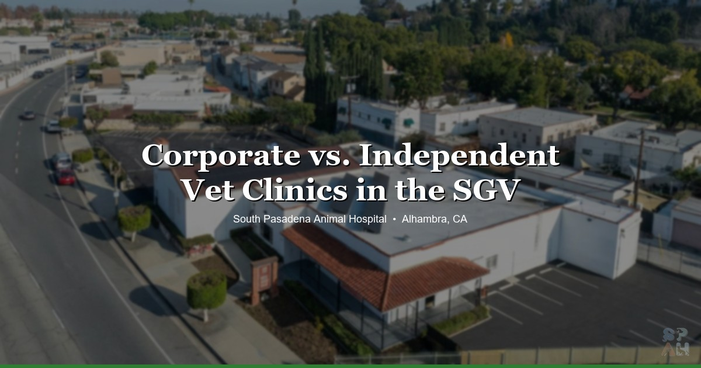

April 8, 2026 · 8 min read
Corporate vs. Independent Vet Clinics in the SGV — What Most Pet Owners Don't Know 🏥

Here's something most pet owners in the San Gabriel Valley don't realize: a lot of the vet clinics you grew up going to aren't independently owned anymore. Over the past decade, large corporations — Mars (the candy company, yes), NVA, VCA, Thrive — have been buying up small animal hospitals across Los Angeles at a rapid pace. The clinic keeps its name, keeps its sign out front, sometimes even keeps the same staff for a while. But the ownership changed, and with it, a lot of the decisions about how care gets delivered.
This isn't a hit piece on corporate veterinary medicine. Plenty of corporate clinics do good work. But the difference between corporate-owned and independently owned matters more than most people think, and almost nobody talks about it openly. So let's.
What Happened in the SGV
In Alhambra, South Pasadena, Pasadena, Highland Park, and San Gabriel alone, several clinics that were independently owned five to ten years ago are now corporate-owned. The signs are still the same. The Yelp reviews might still reference the old owner. But the business model changed.
This isn't unique to the SGV — it's happening everywhere. Nationwide, corporate groups have acquired thousands of veterinary practices over the last decade. The pace picked up around 2018–2020, and it hasn't slowed down much since. Private equity firms saw veterinary medicine as a stable, recession-resistant industry with fragmented ownership (lots of small practices, easy to roll up), and the acquisitions took off from there.
Most of the time, the practice doesn't announce the sale. There's no press release. The name stays. The logo stays. If you weren't paying close attention, you'd never know anything changed.
How to Tell if Your Vet Is Corporate-Owned
There's no single giveaway, but here are patterns we hear about from pet owners who've switched clinics:
- Rotating vets. You used to see the same doctor every time. Now there's a different face at every visit, and nobody seems to remember your pet's history without checking the chart.
- Prices going up without explanation. Fees increase, sometimes significantly, and the front desk can't really tell you why.
- Being pushed toward packages or wellness plans. Monthly billing "care plans" that bundle services together. These aren't always a bad deal, but they're a hallmark of corporate practice management.
- Recommendations that feel upsell-y. Every visit seems to end with a list of add-ons — additional bloodwork, dental packages, supplements sold in-house.
- Corporate-looking intake forms and branding. Slick, standardized paperwork that looks like it was designed by a marketing department rather than printed at Office Depot.
None of these things are automatically bad. But they're worth noticing.
What Actually Changes When a Clinic Gets Acquired
When a corporation buys a veterinary practice, a few things tend to shift over time:
Vet turnover increases. The original owner often stays on for a year or two as part of the sale agreement, then leaves. Associate vets come and go more frequently. The continuity you had — one doctor who knew your dog's whole history, who remembered that your cat hates being held a certain way — that fades.
Pricing often goes up. Corporate groups have overhead that independent practices don't: regional managers, corporate offices, marketing departments, investor returns. That cost gets passed somewhere, and usually it's into the fee schedule.
Treatment recommendations may lean toward more testing and more procedures. This is the one people get most uncomfortable talking about. Corporate groups set revenue targets. Individual clinics are expected to hit numbers. That doesn't mean every recommendation is profit-motivated — most vets genuinely care about doing right by animals regardless of who signs their paycheck. But the incentive structure is different. When there's pressure from above to increase average transaction value, it can subtly shape what gets recommended and how aggressively.
The "we know your pet" factor fades. Independent practices tend to build relationships. The vet knows your pet's quirks, the front desk knows your name, someone remembers that your rabbit doesn't tolerate a certain medication. At a corporate practice with high turnover, that institutional memory gets thinner over time.
Again — corporate vet care isn't evil. Some corporate clinics are great. The vets working in them are real veterinarians who went through the same training and genuinely want to help animals. But the incentive structure is different, and that's worth understanding.
What Independent Looks Like
At South Pasadena Animal Hospital, Dr. Sylvia Chiang and Dr. Gina Navia own the practice. They set the prices. They decide what gets recommended and what doesn't. There's no corporate office sending down protocols about how many blood panels to run per month.
If we tell you your dog needs bloodwork, it's because your dog needs bloodwork — not because we're trying to hit a number. If we tell you something can wait, it can wait. There's no regional manager looking at our average invoice totals.
That's not a sales pitch. It's just how the math works when the people treating your pet are the same people who own the business. The incentive is to do right by you, keep your trust, and have you come back. Not to maximize revenue per visit.
We also don't do wellness plans or monthly billing packages. You pay for what your pet needs, when they need it. Our pricing is posted online because we think you should be able to see what things cost before you walk in the door.
How to Choose the Right Clinic for You
Whether you end up at an independent clinic or a corporate one, these are the things that actually matter:
- Do you see the same vet consistently? Continuity of care matters. Your vet should know your pet, not just your pet's chart.
- Are recommendations explained clearly and honestly? You should understand why something is being suggested and what happens if you don't do it. No guilt trips, no pressure.
- Do you feel pressured or informed? There's a real difference. A good vet gives you options and lets you decide. A pressured visit feels like you're being sold something.
- Can you call and talk to someone who knows your pet? Try calling your vet's office with a question. Do you get someone helpful, or do you get a call center?
- Is pricing transparent? Can you find out what an exam costs before you book? Are estimates given before procedures? Are there surprise charges on the invoice you didn't expect?
These questions work for any clinic. Corporate or independent, the answers tell you a lot about how the practice is run and whose interests come first.
Why We're Talking About This
We're not writing this to trash anyone. Honestly, some of the corporate clinics in the SGV have good vets doing good work. We know some of them personally.
But we think pet owners deserve to know what they're walking into. If your clinic got acquired three years ago and you had no idea, that's not transparency. If prices went up 40% and nobody explained why, that's not a good sign. And if you're Googling "vet near me" and choosing between five clinics that all look independent but three of them are actually owned by the same holding company — you should know that.
We're at 3116 W Main St in Alhambra, serving families from South Pasadena, Pasadena, Highland Park, San Gabriel, and across the SGV. Privately owned, no corporate backing, no private equity. Just two vets who built this practice from scratch and still work in it every day.